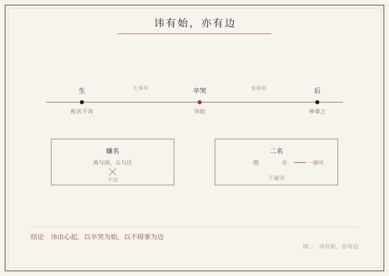

曲礼上 · 一·一百一十一 · 第 109 课
卒哭之后才避死者之名。避讳有三条边界：不避同音，双名不必两字皆避。
说什么事：卒哭乃讳。礼，不讳嫌名。二名不偏讳。
落在哪一层：制，兼及礼意。讲的是「名」的分量。
为何编在此位：上节言祭事之终，此节言丧事之后。祭毕而讳始，事之续也。
【经】卒哭乃諱。禮，不諱嫌名。二名不偏諱。
【注】敬鬼神之名也。諱，辟也。生者不相辟名。衛侯名惡，大夫有名惡，君臣同名，《春秋》不非。為其難辟也。嫌名，謂音聲相近，若禹與雨、丘與區也。偏，謂二名不一一諱也。孔子之母名徵在，言在不稱徵，言徵不稱在。
卒哭 葬后之祭。疏「古人生不讳，故卒哭前，犹以生事之，则未讳。至卒哭后，服已受变，神灵迁庙，乃神事之」。
讳 注「辟也」，即避。
嫌名 注「音声相近，若禹与雨、丘与区」。疏「禹与雨音同而义异，丘与区音异而义同，此二者各有嫌疑」。
二名不偏讳 注「偏，谓二名不一一讳也」。疏「两字作名，不一一讳之」。
徵在 孔子母之名。疏引《论语》「足则吾能徵之矣」「某在斯」为证。
生者不相辟名 注引卫侯恶与大夫同名，《春秋》不非。疏辨「石恶」当为「齐恶」。
行过卒哭之祭，才避死者的名。依礼，不避读音相近之名；双字之名，不必两字都避。
三句话，讲名与人的关系如何随生死而变。生前称名不避，死后称名则心动，故讳。而讳又不可无限：同音不讳，双名不遍讳。敬是有边的，无边则废事。
第一层 卒哭乃讳 疏「生不讳，死则质藏，言之则感动孝子」。讳不是规矩先行，是心先动，礼随后跟上。
第二层 讳之由心 注「孝子闻名心瞿，讳之由心」。这一句把整个避讳制度落回了人的心上。
第三层 不讳嫌名 若连禹与雨、丘与区都要避，则言语几乎不能成句。敬而至于碍事，就不是敬了。
第四层 二名不偏讳 两字之名，用其一即可。疏引孔子言「徵」不言「在」、言「在」不言「徵」。避讳也要留出说话的路。
与今日何干 尊重一个人的忌讳，要落到具体：避什么、避到何种程度、在什么场合避。笼统的敬，常常变成别人的负担。
| 左 | 右 |
|---|---|
| 卒哭乃讳 | 生事毕而鬼事始，敬鬼神之名 |
| 生者不相辟名 | 卫侯恶与大夫同名，春秋不非 |
| 不讳嫌名 | 禹与雨、丘与区，音近不避 |
| 二名不偏讳 | 徵在不一一讳，言此不称彼 |
| 讳之由心 | 孝子闻名心瞿 |
画一块石碑，碑面上一行字迹被一道浅色横线轻轻遮住一半，另一半仍清楚可见；碑侧放着一枚写有两字的小木牌，牌上两字之间画着一道细竖线，把两字分开。石碑下方地面上有一条低矮的土埂，示意卒哭之后。不画人、不写文字。赭色只用在碑面那道横线的两端。
